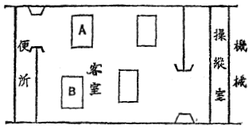

| 旅客機事件 | |
| 大庭 武年 | |
| (2012) | |
旅客機事件
大庭武年
１
――Ｅ・Ｓ微風、驟雨
模様の薄曇。
「乗客は幾人だね？」
煙草を銜え、飛行服のバンドを緊
め直し乍ら、池内
操縦士が、折から発動機
の点検を了
えて事務所に帰って来た、三枝
機関士に訊ねた。
「二名だよ」
外では、ブルンブルンＢｒ......と、湖水の水のように、ひんやり静まり清まった緻密な空気を劈
いて、四百五十馬力のブリストルジュピタア発動機が、百雷のような唸りをたてている。――矢張り定期航空は、各エア・ポオトで欠航の無い事を誇りにしている為、大抵の天候なら出発するのだが、然し一日中に一ぺんは空を飛ばなくっちゃ夜ねむられないと言うエア・メンも、乗客の有るのと無いのとでは――殊に天候の思わしくない時なぞ、気持の上の重圧感が、可成り違うものなのだ。
「――二人ね。什麼
人達だい？」
けれどそう尋ねて、池内操縦士は一寸眸
を瞠った。何気なく眺めた壁鏡の中の相手の顔は、ひどく血の気の引いた、昂奮し切ったものだったからだ。が、三枝機関士は、向う向きに飛行帽を冠り乍ら、無理に落ちついた風で応えた。
「一人は生糸商人だとかだが、も一人は......」そこで明らかに躊躇した後「......何でも銀行家だとか言う事だ」
助手の操作する発動機の響が、三枝の語尾の顫えをかき消した。池内は、銜えた煙草の最後のけむりを、大きく肺に吸い込むと、
「そうかい、今日も不漁
なんだね」
とさりげない冗談を言って、
「――じゃ一寸行って来るとしようか」
と簡単に事務所の扉を後にした。が、丁度彼が、飛行場の緑草を、機翼をビリビリ逸
りたつように顫わせている、フォッカアユニバアサル機の方に歩いて行く途中頃で、まもなく後から追いついて来たらしい三枝に、名を呼ばれた。池内は振り返って足を止めると、三枝は日頃にない落ちつかない声で、
「あのね、今日は飛行中一寸頼んで置き度い事があるんだがな」と言った。
「何だい？」
「実は」と変にまぶしげに同僚の顔を眺めた三枝は「Ｈ飛行場に着く迄、じっと航空路の各地点の現様に気をつけていて欲しいんだ」
「何だい――」池内は不審気に「其麼
事、君がちゃアんと見ていればいいじゃないか？」
「うん、だが――」
三枝はもろくも狼狽して、顔をあらぬ方へ逸らしたが、すぐ気持を盛りかえすように、
「兎に角、僕も気をつけている事にするから君も頼むよ。是非、どうか......」
と言い捨てると、その儘駈足で機の方へ走って行って了った。
「あいつ余程今日はどうかしている」――池内操縦士は、その後姿を眺めてそう思ったが、彼の態度が何を意味しているか、勿論わかりはしなかった。
軈
て出発、発動機は好調。池内、三枝、二名の機員に、操縦桿を握られたアメリカ・アトランテック社製の美しい旅客機は、その長細い胴体に二人の乗客――一人は商人風な小柄な男、一人はでっぷり肥った重役型の美髯家
を、収容して、するすると飛行場の緑草の上を滑走し始めた。
「行ってらっしゃアい！」
見送りに出た飛行場員達が後で手を振る。エンジン・レバアをじりじりと引いて、頃を見計って全開だ。轟と凄まじい音と共に機体がスイと空に吸い上げられて、今迄太い細い線模様を描いていた地面が、忽ち野や山や人家が箱庭のように、小さく瞭
り見える迄に収縮して了う。もう五百米
の高空なのだ。
Ｊ部落、Ｔ河、Ｏ山、Ｂ湾――必要上自分達だけで作っている地上標識が、三分乃至五分おき位に、眼界に現れて眼界から消え去る。慣れた道だ、天候は良くないが、先ず今日は心配気はない空の旅。
「便所に行ってくるよ」

三十分程経った所で、沈黙に終始していた三枝が、急に腰をもたげ乍ら、池内の耳元で大きく言って、自分の座席を跼み乍らはねのけた（大抵の人は知っていると思うが、旅客機内の模様は上掲の如きものである。尚、念の為めに附記すれば、Ａの座席に重役風の紳士が、Ｂの座席に商人風の男が坐っていたのである）。そして、窮屈な扉から客室の方へもぐり降りて行った。
山、河、谷、原......それから十分はたっぷりかかったろう。三枝は池内が二度時計を出して眺めている所へ、帰って来た。と池内は何かしら胸を押えられる気重な気分を三枝の持つ雰囲気から受けた。
「変だなあ、こいつ――」
丁度その時、前方から飛翔して来たＰ民間飛行場のアブロ練習機が、見事なインメルマン・ターンをして、ピタリと旅客機の左肩に機首を並べた。
「よう！」
「よう！」
両方から手を振って愉快な交驩
をしたが、次の瞬間には練習機はじゃれつくように急昇騰して、旅客機の背中をすれすれに飛ぶと、すいと失速旋回
をして、見る間に百米も後方に、吹き飛ばされたように流れ去って行った。
「やっと半分来た」池内操縦士は操縦桿を握り乍ら思った。練習機の飛ぶあたり、ＤとＨの両飛行場を結ぶ空路の、中途に当るのだった。
それから後の三十数分間は、池内操縦士は不思議な相棒の、昂奮した、色蒼ざめた、変に落ちつかない、顔色や態度に悩まされ続けて飛んだ。極端に鋭敏なエア・マンの精神作用は、発動機や機体や天候に就てと同しように、お互同士の肉体上の事迄、感じさせるものだった。
「一体、三枝の今日の態度は何とした事であろう。美しい、そしてたいへん良家の令嬢を恋女房とする事の出来る日の近づいていた彼にとっては、来る日来る日が幸福で、朗かそのもののようであったではないか！ それが今朝に限って......」
くりかえし其麼
事を考えているうちに、やっと目的のＨ飛行場の白円が、薄く下を流れる雲の間から見え出した。エンジン・スイッチを切って得意な滑空。と、地面がずんずんふくれるように盛り上って来て、......愈
てずしんと車輪が大地にバウンドした。
「さあ一先ず降りて休もう」
ピタリと機体を停止さすと、池内操縦士は腰のバンドを解き乍ら、急に瘦せたようにさえ見える、陰翳の濃く漂った三枝の横顔に言った。と、その時だった。客室へ出る小さな扉が、邪慳
に外から打ち開かれて、そこから、ここの飛行場旅客係の男の、呶鳴るような声が飛び込んで来た。
「た、大変だ、秀岡
氏が死んでいるじゃないか！ そして、そして綿井
氏が行方不明だ！」
２
×市、生糸問屋、綿井茂一
、四〇歳、Ｈ飛行場迄
×市、Ｒ銀行頭取、秀岡清五郎
、六三歳、Ｋ飛行場（Ｈの次のエア・ポオト）迄
――出発飛行場Ｄの、乗客名簿には、その朝の乗客二名に就ては、以上のように記録されてあったのだ。その二人がまア何と言う事だ、一人はＨへ来る途中の高空で紛失して了うし、一人は前額部をひどく打ち砕かれて、鮮血にまみれて死んでいたのだ。
池内、三枝、両機員はその場からＨ市警察署に拘引されて取調べられた。事件に就ては全然知る所がないと言った池内に対して、署長はひどく怒った声で言った。
「では君達は飛行中一度も客室には顔を出さなかったと言うのか？ 君達の席から全く離れはしなかったと言うのか？」
「不幸にして私は客室を覗く機会を持たなかったのです。私はかえってそれを遺憾に思っている位です」
池内操縦士は、同僚を庇
うように昂然と言った。が、三枝はすっかり顔色を失って峻烈そのもののような署長の前に、
「いや、私だけは一度飛行中客室へ降りました」と告白せざるを得なかった。
「何の為めに――？」
訊問官は追撃した。
「便所に行ったのです」
三枝は顫えた。
「ふん」署長は冷笑した。「では君は、君が犯人でないと言う証拠を提出しない限り当面の容疑者たらざるを得ない。又池内君は、完全なるアリバイがない限り、又被疑者たるを逭
れないだろう」
「アリバイ？」
池内は愕然とした。
「そうだ、アリバイだ。先ず考えて見給え。事件は空の上で行われた。そしてそこには数百万の人間の中から選ばれた四人しかいなかったのだ。絶対に――。そして誰れも機上の情況を見ていた者はなかったのだ」
「でも私は神に誓って座席から一寸も離れはしなかったのです」
池内は狼狽した。
「神？ だが我々は神にその真偽を糺
す方法は持たない。兎に角、一人の男は機上から姿を消し、一人の男は惨殺されているのだ」
そして署長は一枚の紙片を改めて取り上げて読み下した。
屍体検案書
姓名 秀岡清五郎
記事 旅客機ＪＸＡＣ客席No.
３上に於て、航空中死亡す。屍体を検案するに、致命傷は前額部の一創にして、約拳大に亙
って、頭蓋骨粉砕し、脳漿
露出す。他殺と確定。兇器は重き鈍器にして、被害者の不意を見すまし、激しき勢を以て一撃のもとに行われしものと思惟さる。被害者即死。
「何と言っても、秀岡氏は他殺されているのだ。被害状態から観て自殺説は全然成り立たない以上、此の事件には必らず犯人がいなければならないのだし、その容疑者としては君達二人、そして機上から姿を消した綿井氏の以外にはあり得ないのだ」
アリバイ！ アリバイ！――池内の頭は混乱した。一体あの狭い空の上の機内で、如何なるアリバイが成立しようと言うのだ！ が、その時突然に、天の啓示のように、池内の頭に閃いた素晴らしい考えがあった。
「署長！ 私には立派なアリバイがあります。私はＤ飛行場を発してＨ飛行場に到着する迄、あらゆる沿線の模様に注意を払って来ました。何時何分頃には何処を通過し、そこは如何なる様子を呈していたか、瞭り申し立てる事が出来ます。これは一分でも座席から離れていたのでは不可能な事です。私は絵巻物をくり拡げるように一分間分のブランクもないように、沿線各地点の模様を述べましょう。そして私は、それを一々各地に問い合わせて、供述の真実であった事を立証させて頂けたら倖
だと思います」
係官一同は、池内の立場として、そうした要求をする事を不当だとは認めなかった。池内は別室で細々と、航路から見た下界の模様を逐一よどみなく申し立てた。幸い当日は曇天だったので、機は五百米下二百米の間を飛んでいた為、地上の様子は、河に糸を垂れている人の着物の色迄、瞭り説明する事が出来た。そして作製された一篇の記録は、即時各方面にその真偽を確めるべく電報乃至電話された。
そうしている間に、Ｈ署には、次のような情報が蒐集
され、又、細密な物的証拠品が発見されてきていた。そしてそれは、事件を大きく「絞り開け
」すると重要な材料となっていた。即ち第一に、機体内を綿密に精査して帰った係官は、総てを綜合して、先ず次の如く報告した。
「――機体内に兇器とおぼしき物遺留されず。又被害者の所持品中の折鞄は開放されて打ち捨ててあり、在中品は二三の書類を残して全部抜き去られ所在不明。尚便所内、窓は開放せられ、そこに取りかたづけられてありし座褥型落下傘
一個紛失」そして最後に最も重大な証拠品たるべき一枚のもみくちゃになった紙片――客室内装備の通話用の紙片――が発見された事がつけ加えてあった。即ちそれには被害者自身の手で、次の如く走り書きされてあったのである。「三枝と言う此の機の機関士が、私を殺すと脅迫している。あなたは同乗のよしみで、私を守って下さい。お礼はしますから」
次に集った情報とはどんなものであったろう。即ち、
一、綿井茂一の屍体、Ｎ原の一隅に発見さる。飛行機より墜死したもの。附近に未開の儘の落下傘発見。屍体には所持品（自分の持物以外）全然無し。近傍の農夫発見して届け出
ず。
一、墜死者綿井茂一は、Ｄ飛行場出発前、飛行場員に託し、一封の手紙を投函せんとした。場員は受取った儘おいたが、事件報知と共に、警察官立会の上開封した。それはＡ市にある家庭に宛てたもので、商売上の失敗から厭世
自殺をする旨の遺書で、その自殺の方法として、飛行機から飛び降りる事を択
んだとしたためられてあった。これはＤ飛行場からの長距離電話。
一、被害者秀岡氏は、取調べの結果、商業上の要務で、現金五万円余を携帯し、至急Ｋ市に向う途中であった。（同上電話）
３
訊問官は、今は三枝機関士を、正当な兇行者と疑わざるを得ない事になった。
「君は、秀岡氏を殺すと脅迫したろう？」
三枝は、それがどうして分ったろう、と言うように顔色を変えた。
「............」
「君と秀岡氏とは如何なる関係にあるのか？」
「謂
ば敵同士でしょうか――」三枝は観念したように小さく答えた。
「私の一家と、秀岡とは姻戚関係にあるのですが、それにも不拘
私の一家は秀岡の悪辣な手にかかって破産せられ、非常にみじめな目に陥入れられたのです」
「秀岡氏と君との間に今朝以来行われたいきさつを話し給え。勿論、飛行中君が便所に行ったとは噓で、秀岡氏と面談する為めに行ったのだろう」
「............」三枝は暫く黙然としていたが、あきらめたように口を開くと「或いはそうかも知れません」と悄然と言って、「然し、その噓は事件が紛糾するのを怖れて口にした迄のものです。何故となれば、私のした事と今度の事とは全く無関係な筈なんですから。実は今朝Ｄ飛行場で顔を合わす迄、私は秀岡が乗客になっているとは知らなかったのです。私は秀岡の顔を見ると赫
となりました。胸の中が沸
るような昂奮に襲われて了ったのです。秀岡も駭
ろいていたようです。で、私はさきにも言いましたように、秀岡に対しては非常な怨みを持っていましたし、又困窮している私共一家の為めに、法律上は兎も角、経済的に相当な事をしてもらえる立場にあったので、その事を、此の顔を合わせた機会に一応口にしてみようと考えたのです。所が、私が客室に行きますと、幸か不幸か今一人の客、綿井氏が便所にでも行ったものと見え、いないのです。で、つい周囲に気兼ねもなく、秀岡にひらき直って話し出したのでしたが、秀岡は案の定、私の昂奮をせせら嗤
うのみで、ろくに相手にもなろうとしないのです。そんな事がつい、私の気持を煽り、脅迫めいた事を言わせる事になったのです」
「ハンマアで撲
り殺すぞと言ったのか？」
「違います。――其麼あく迄我々に対して悪魔のような態度をとるなら、こちらも悪魔になってやる。幸い貴方は血圧が高いし、心臓が弱いから、機を四千米ばかりに上げて、貴方を高空病にかからせて命を取ってやる、と脅かしたのです。そこへ便所から綿井氏が出て来たので、私は操縦席へ帰ったのです」
――三枝の答弁には淀みが無かった。然しその供述を立証する何等の証左も無い事は、如何とも出来なかった。係官一同は、錯綜した事件の外貌から、出来得る限りの真意を摑み取ろうと考え、次のような可能的な仮説を作り上げてみた。
Ａ 綿井が加害者である場合
彼は商業不振より自殺を決心したものの、機上に於て同乗客の鞄中に大金のあるのを知り、三枝が秀岡を脅迫した事実あるを幸い、自身が兇行を演じて大金を奪い、自分は予定通り自殺を装って飛行機から飛び降りたが、落下傘に就ての知識が薄かったので、遂に惨死した（然しこの場合、不審な事は、その屍体が金を携帯していなかった事である）。
Ｂ 三枝が加害者である場合
三枝は綿井の自殺後秀岡を撲殺した。又は秀岡を撲殺後、綿井をも機上からつき落した。ただしこの場合も金の行方は不明。
Ｃ 池内が加害者である場合
厳密に言えば、Ｃの場合は考えられないかも知れない。何故となれば、池内と被害者とは全然関聯点
のない人達だから。尤も金が目的と言えば理由は出来るが、池内が若し犯罪に関係しているとすれば、彼は三枝の補助者であるか、共謀者であるかである。
然し、警察が斯うして事件を探求しているうちに、求めに応じて各地からかかって来た長距離電話は、完全に池内操縦士のアリバイを確立させて了いつつあった。そして結局池内は、事件に就て、或いは精神的に関係者であったかも知れないにしても、直接な加害者ではない、と言う事を確認されずにはいられなかった。そして遂に茲
に、犯人は残った二名のうちに限定されてきて了った。即ち、Ａの場合か、Ｂの場合か――？
４
池内は、自分一人になってつぶさに事件を考える、時間と気持の上の余裕を得た。すると彼の胸には、如何にしてもこの事件の謎を自分の力で解決しなくてはならないと言う責任感が湧いて来た。運命的とは言え、自分こそ事件現場にいた唯一の無関係者だ、自分がこれを解決せずに誰れに解決が出来ると言えるであろう。それよりなにより、又自分にとっては、親愛なる三枝を冤罪から助け上げなくてはならぬ義務がある。自分は彼を絶対に信じる。生命を投げ出し合っているエア・メンたちにのみ流れている純真な道徳が、決してそのような犯罪を犯させないであろう事を信じる！――池内は精密に思考をめぐらしてみた。と、又急に思いついた事は、途中で出会ったＰ民間飛行場の練習機の事である。「そうだ、空中で尠くとも我々以外に我々の機の中の様子を知っている者は、あの機の乗組員だ！」
池内は警察にその旨を通知して、警察からＰ飛行場に、長距離電話で問い合せてもらった。返事は即ち恁
うだった。
「――旅客機に会ったのは午前十一時二十四分。その時に操縦室に操縦士と機関士が着席し、客室に二名の乗客が練習機の方を窓を開けて眺めていた」
報告を受取ると池内は我を忘れて万歳を心に叫んだ。勿論綿井の屍が発見せられたのは、Ｐ民間飛行場よりＨ飛行場に寄ったＮ原の上であるから、綿井がその頃まだ、機上にいたのは不思議ではないが、秀岡がちゃんと立派に生きていたとは一体何を意味するであろう。一体三枝が便所に行くと称して去ったのが、十一時十分ごろ。帰って来たのは正確に十一時二十分。そして、練習機と肩を並べたのが十一時二十四分。Ｎ原の上を通過したのが十一時三十二分頃であった。さすれば、秀岡の惨殺されたのは、三枝が操縦室に帰って後の事となり、三枝が二度と操縦室から出なかった以上、三枝は秀岡を殺した犯人ではなくなる筈ではないか！
「兎に角、三枝は僕の期待を裏切らなかった」――池内は雀躍
した。だがそれを地上の人達に証明するにはどうしたらいいのか？ 池内は考えざるを得なかった。
がその翌日。
池内は緊張の下に、隠し切れない喜びの顔色を泛
べ乍ら、Ｈ警察署の召喚に応じた。今度は相手が検事だった。池内はすっかり自信ある態度で次のようにのべた。
「――今、容疑者は二名います。然し実際の所は三枝は犯人ではないのですが、彼には不孝にしてアリバイがないので証明出来ないでいます。けれど、これを別の方面から推しすすめてみると、或いは自然とそれが証明される結果になるかも知れないと思います。ではどう考えたらいいか？ 即ち綿井氏はどうして死んだかと言う事です。署内では第一に自殺説、第二に他殺説となっているようですが、実際に於て綿井氏は自殺する心算
で飛行機に乗っていたのですし、又金を盗んだとしてはそれが屍体から発見されないのですから、第一の説も考えられない事もありますまい。然し一体自殺するのに落下傘を持ってする人があるでしょうか？」
「なに、第三者が其の男のすぐ後から落下傘を故あって投げたと言えば言えない事はなかろう。その意味から第二の他殺説も有力になるのだ。即ち突き落しておいて、すぐ後から落下傘を落して置くと言う事も、十分考えられ得るからね」
――検事の眼には、ありありと、当時の情況がうつる気がするのであった。練習機から見た時には乗客二人は生きていた。がそれから僅か飛んだＮ原には既に綿井が墜死していた。誰れにも、その僅かの間に、乗客二人を相手とした大格闘が行われたものとは推定され得なかった。乗客二名はどうせ団結していたろうし――。だから、どうしても綿井の死が先であるらしく思われた。もし自殺であるなら、秀岡が知らないでいる間に行われ得るし、他殺にしろ、彼を一人秀岡が知らぬ間に、便所におびき寄せ、そこから突き落すと言う事も不可能事ではない。孰
れにせよ、兇行は邪魔者がいなくなってから、油断をみすまして一撃のもとに行われたものである事は明瞭である。邪魔者がいて、どうして阿麼
手際よい殺害振りが出来るであろうか。
「然し検事殿」検事の言葉を聞くと、池内は眉をあげて言った。「落下傘は屍体のすぐ傍にあったと言うのではないのですか？ 一体あの時、機の速力は時速百二十哩
位でした。だから、そうです、秒速にすれば一町ぐらいに当るのです。若し貴方が謂
われるように、綿井氏を落して後、落下傘を第三者が投げたとすれば、如何にしても一町や二町、屍体と落下傘の距離は出来なければならない筈なのです。落下傘は確実に綿井氏が携帯して飛び降りたのである事は、後に示された現場から見て確実です」
「すると綿井氏は自殺でも他殺でもないと言う事になるではないか？」
「そうなのです。私は考えるのですが、綿井氏は自殺する心算でいた事は確実で、飛行中もその飛び降りるべく心を砕いていた、が急な精神上の転化から自殺を思い止まり、その前にゆくりなくも発見していた落下傘を利用し、一狂言演じようとして失敗したのであろうと思います」
「すると君は、秀岡氏殺害犯は綿井氏だと言うあの説なのだね」
「いや、それは一寸待って頂きたいのです」池内は時計を出してみて「もうすぐ、それは他から証明される筈になっておりますから。その報告次第に依っては、私は事件をどう取扱っていいか分らなくなるのですが、多分、期待通り解決はつく事になりはしないかと思います」
「君は、では、孰れにせよ、綿井氏より秀岡氏の方が先に死んだものと解釈するようだね？ もし綿井氏の方が先に飛行機からとび降りれば、秀岡氏を殺害した犯人は君の主張によれば、どこにもないと言う事になるからね」検事は鷹揚に池内の言葉を聞き終ると言った。
「いや、綿井氏は絶対に秀岡氏の死より先に機から飛び降りたのではないと考えます。綿井氏の精神を自殺から他へ転向させたのは、勿論、秀岡氏の所持する金が自分の手に握れる立場になった故に違いありません。他に理由のつけようがありませんから――。然し理由もなくどうして秀岡氏が、そんな大金を甘んじて綿井氏に提供するでしょう......」
「では矢張り秀岡氏殺害犯人は......」
――丁度そこへ署員が慇懃に現われた。
「唯今、Ｎ警察署から通知がありまして、昨日綿井氏の屍体を発見して届け出た農夫が再び警察に出頭して、自分が屍体の懐中からこれだけの札束を横領隠匿したと自白して、五万円の金額を提出したそうです」
「うむ！」検事は頷いた、池内の顔も難関が取り除かれたように釈然と明るくなった。途端、卓上電話のベル。
「ああそう」検事は電話の相手に応えた。そしてうんうん聞いていたが、不審気な面持で、受話器を池内の方へ渡してよこした。
「Ｐ民間飛行場から長距離の電話だ。何だか僕には分らぬ事を言っている」
かわるとそれは斯うだった。――「御通知によって、昨朝飛翔したアブロ練習機を精査してみると、車輪軸に打たれている鋲
が一個はずれている事を発見した。紛失は昨日の練習飛行の際行われたものである事は明らかである」
「検事殿、犯人はわかりました。それは練習機からはずれて飛んだ小さな鋼鉄の鋲でした」電話機を投げ出すように置くと池内が叫んだ。「幸いにして私の予想が当った事をうれしく思います。綿井氏は秀岡氏が不慮の死に遭ったのを目撃して、不図悪心を起したのでしょう、神の審
きがすぐある事を知らず......」
５
「いや実際僕は慌てたよ」
晴れた朝のＨ飛行場の草の上を、池内は三枝と肩を並べ乍ら、ブルンブルン、プロペラアを唸らせている旅客機の方へ歩いて行きつつ言った。――「どうも形勢君に不利なんだからな。然し僕にどうしても想像つかなかったのは兇器だ。君は僕から見て事件から無関係であるとしても、綿井氏が機に乗る前から、秀岡氏に殺意を抱いていたものとは考えられぬ。何故となれば二人は飛行場で初めて顔を合わせた未知同士だったのだからね。だからどうしても、綿井氏が兇器をかくし持っていたとは考えられず、一方狭い機内には何一つとして兇器に利用されるような物はなかったのだ。勿論秀岡氏は鞄以外に所持品の無かった事は誰れだって知っている。僕は結局想像を可及的に拡げてゆくより外に仕方はなかった。即ち一九二八年オランダであったと言う事件、すれ違った機から、その機の附属品が飛んで、他の機の操縦者を傷つけたと言う事件を考え浮べずにはいられなかった。そしてすぐその考えの当っているかどうかを、Ｐ民間飛行場に尋ねてみたのだ」
二人は顔を見合せて微笑んだ。
「然しね三枝」池内は続けて言った。「何が幸いだと言っても、僕に立派なアリバイがあった事だ。若し僕にアリバイが出来なかったとしたら、僕等は什麼
怖ろしい結果になっていたか知れない。然しそれと言うのも所詮君がＤを出る前に、あんな事を僕に頼んだからこそだった。一体、什麼心算で、阿麼
事を僕に頼んだのだ？」
三枝は急に顔を赤らめて答えた。
「玲子
さん（彼の許嫁
）が慎三
君（その兄）とその前日より自動車旅行に出ていたのだ。そしてあの日どこかで僕等の飛行機を発見して、下界から旗を振る約束になっていたのだ。僕はそれを注意している筈だったが、秀岡に会ったので、それを君に頼まなければならなかったのだよ......」
（「探偵」一九三一年十一月）
底本：「「探偵」傑作選 幻の探偵雑誌9
」光文社文庫、光文社
２００２（平成14
）年1
月20
日初版1
刷発行
初出：「探偵」駿南社
１９３１（昭和6
）年11
月号
入力：川山隆
校正：伊藤時也
２００８年11
月11
日作成
青空文庫作成ファイル：
このファイルは、インターネットの図書館、青空文庫（http://www.aozora.gr.jp/）で作られました。入力、校正、制作にあたったのは、ボランティアの皆さんです。